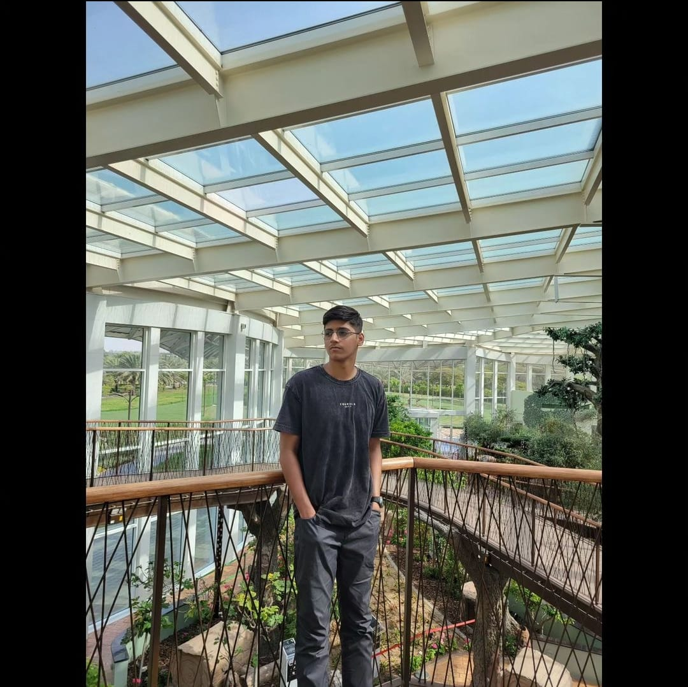

Hello!
My name is Saad Ahmad and I am 19 years old. I previously completed my A-Levels from The City School Lahore.
Usually people my height (6'5) are interested in sports like Basketball – but
personally I am more into video games.
Since I was around 12 years old I was always fascinated by computer systems, which
led to the development of my skill in computer languages.
I joined ITU with a lot of motivation and energy to achieve my goals that I have set for myself.
And I can now confidently vouch that ITU is perfectly capable of helping me achieve my desired
goals. I also plan to do a master’s degree from ITU after I graduate.

Links to social profiles: